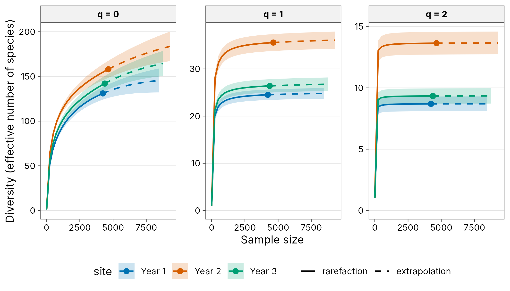

Case study: butterfly monitoring in the Wanang forest plot
Source:vignettes/articles/case-png-butterflies.Rmd
case-png-butterflies.RmdLuk et al. (2019) counted butterflies on 36 days, three a month over 12 months spread across three years, in the Wanang forest dynamics plot, Papua New Guinea. Repeated sampling of one place suits questions about temporal diversity: how much does a year of monitoring capture, and how different are years?
Source and licence. Data on Dryad (doi:10.5061/dryad.j35fq7r)
under CC0 1.0. Only the Wanang part of the published multi-site data is
included. See ?wanang_butterflies and
data-raw/wanang_butterflies.R.
library(tidydiversity)
library(dplyr)
library(ggplot2)
set.seed(2026)
wanang_butterflies
#> # A tibble: 2,020 x 6
#> site day month year species abundance
#> <chr> <int> <int> <int> <chr> <int>
#> 1 day01 1 1 1 Apaturina erminea 4
#> 2 day01 1 1 1 Appias celestina 2
#> 3 day01 1 1 1 Cirrochroa regina 14
#> 4 day01 1 1 1 Cyrestis acilia 1
#> 5 day01 1 1 1 Danis danis 41
#> 6 day01 1 1 1 Danis glaucopis 1
#> 7 day01 1 1 1 Danis regalis 34
#> 8 day01 1 1 1 Dicallaneura decorata 2
#> 9 day01 1 1 1 Elodina hypatia 5
#> 10 day01 1 1 1 Elymnias cybele 6
#> # i 2,010 more rowsEach year of monitoring
Pooling the days within each year gives one sample per year:
years <- mutate(wanang_butterflies, site = paste("Year", year))
div_coverage(years)
#> # A tibble: 3 x 6
#> site n s_obs f1 f2 coverage
#> <chr> <int> <int> <int> <int> <dbl>
#> 1 Year 1 4228 131 27 19 0.994
#> 2 Year 2 4644 158 36 13 0.992
#> 3 Year 3 4369 142 35 17 0.992
div_estimate(years, nboot = 100)
#> # A tibble: 9 x 7
#> site q observed estimate se lower upper
#> <chr> <dbl> <dbl> <dbl> <dbl> <dbl> <dbl>
#> 1 Year 1 0 131 150. 9.33 139. 178.
#> 2 Year 1 1 24.5 25.0 0.590 24.5 26.1
#> 3 Year 1 2 8.69 8.71 0.287 8.69 9.27
#> 4 Year 2 0 158 208. 20.3 181. 266.
#> 5 Year 2 1 35.6 36.4 0.982 35.6 38.4
#> 6 Year 2 2 13.6 13.7 0.451 13.6 14.6
#> 7 Year 3 0 142 178. 17.2 157. 230.
#> 8 Year 3 1 26.4 27.0 0.673 26.4 28.3
#> 9 Year 3 2 9.33 9.35 0.325 9.33 9.99Each year recorded more than 4000 butterflies with coverage above 99%, yet estimated richness exceeds observed richness by about 20 to 50 species: rare species remain undetected after a full year.
autoplot(div_rarefy(years, q = c(0, 1, 2), knots = 40, nboot = 100))
How different are the years?
beta_multi(years)
#> # A tibble: 1 x 4
#> n_sites turnover nestedness total
#> <int> <dbl> <dbl> <dbl>
#> 1 3 0.209 0.0641 0.273Most of the difference between years is turnover. Within each year, the four sampled months also differ substantially:
wanang_butterflies |>
mutate(site = paste("Month", month)) |>
beta_multi(.by = year)
#> # A tibble: 3 x 5
#> year n_sites turnover nestedness total
#> <int> <int> <dbl> <dbl> <dbl>
#> 1 1 4 0.273 0.252 0.524
#> 2 2 4 0.367 0.0759 0.443
#> 3 3 4 0.327 0.108 0.435These results support the paper’s conclusion that monitoring across several years captures far more of the species pool than any single year.
Reference
Luk, C.-L., Basset, Y., Kongnoo, P., Hau, B. C. H. and Bonebrake, T. C. (2019). Inter-annual monitoring improves diversity estimation of tropical butterfly assemblages. Biotropica, 51, 519-528. doi:10.1111/btp.12671